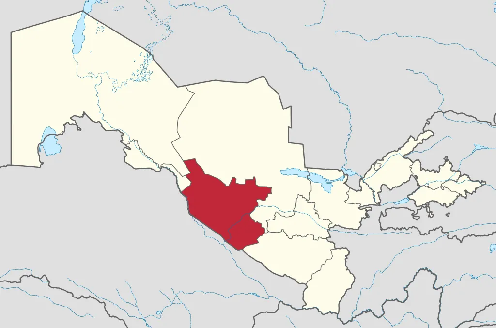

Buxoro viloyati
Buxoro viloyati — Oʻzbekiston Respublikasining 12 viloyatlaridan biri. Oʻzbekiston viloyatlari ichida, chegasining kattaligi boʻyicha Navoiydan keyin ikkinchi oʻrinda turadi. 1938-yil 15-yanvarda tashkil etilgan. Buxoro viloyati hududi asosan Qizilqum choʻlida joylashgan. Janubi-sharqini Zarafshon vodiysi egallagan. Shimoli-gʻarbda Xorazm viloyati va Qoraqalpogʻiston Respublikasi, shimol va sharqdan Navoiy viloyati, janubi-sharqda Qashqadaryo viloyati, janubi-gʻarbda Turkmaniston bilan chegaradosh. Maydoni 39,4 ming km2. Aholisi 1443 mingdan ziyod kishi (2001). Buxoro viloyati tarkibida 11 qishloq tumani: Buxoro, Vobkent, Jondor, Kogon, Olot, Peshku, Romitan, Shofirkon, Qorovulbozor, Qorakoʻl, Gʻijduvon, 11 shahar (Buxoro, Galaosiyo, Vobkent, Gazli, Kogon, Olot, Romitan, Shofirkon, Qorakoʻl, Qorovulbozor, Gʻijduvon), 3 shaharcha (Jondor, Zafarobod, Yangibozor), 121 qishloq fuqarolari yigʻini bor. Buxoro shahar aholisining etnik tarkibi asosan Uzbek, Rus, Fors (Eroniylar), Turkman, tojik, Ukrain, koreys, tatar va boshqalar tashkil etadi.Markazi-Buxoro
Viloyatda 6700 oʻrinli kasalxonada 4343 vrach va 16100 oʻrta tibbiy xodim ishlab turibdi. 22 ayollar konsultatsiyasi, 281 qishloq vrachlik punkti, 68 feldsherakusherlik punkti, 28 qishloq uchastka kasalxonasi bor. 17 poliklinikada jarrohlik markazlari, 9 ambulatoriyada ixtisoslashtirilgan davolash markazlari tashkil etilgan. Viloyatda 3 sanatoriy, jumladan Sitorai Moxi Xosa sanatoriysi mavjud. Buxoro shahridan 25 km narida Toʻdakoʻl dam olish maskani joylashgan. 2001-yilgacha oʻz kasbi boʻyicha xususiy ish faoliyati yuritish uchun viloyatda 150 mutaxassisga litsenziya berildi.
Buxoro viloyati hududining relyefi aksariyat geomorfologik xususiyatlariga koʻra birmuncha murakkab tekisliklardan iborat. Eng baland joyi Quljuqtov tizmasi. Quljuqtov bilan Zarafshon daryosi vodiysi oraligʻida Oyoqogʻitma botigʻi joylashgan. Buxoro viloyatida quyidagi relyef koʻrinishlarini ajratish mumkin: Alohida ifodalangan past togʻlar, platolar (Kuljuqtov, Tuzkoy togʻi, Jarqoq, Saritosh); Tekis yuzali plato va qirlar (Qorakoʻl, Dengizkoʻl, Uchbosh, Qoraqir); Daryo va koʻl yotqiziqlari bilan qoplangan va shamol taʼsirida vujudga kelgan akkumulyativ tekisliklar; Alohida ifodalangan berk botiqlar (Qoraxotin, Oyoqogʻitma, Dengizkoʻl); Yassi yuzali vohalarda balandligi 5–15 m li tepalar uchraydi.